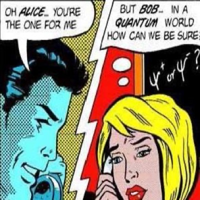

Dushan Karovich-Wynne
Security Lead
I lead security for RubyGems.org: incident response, proactive outreach in our gem security program alongside a great team of volunteers and the equally important work of making the registry harder to attack. Philosophy on security: Engineer it in from first principles, less is more, the secure path should also be the easy path.